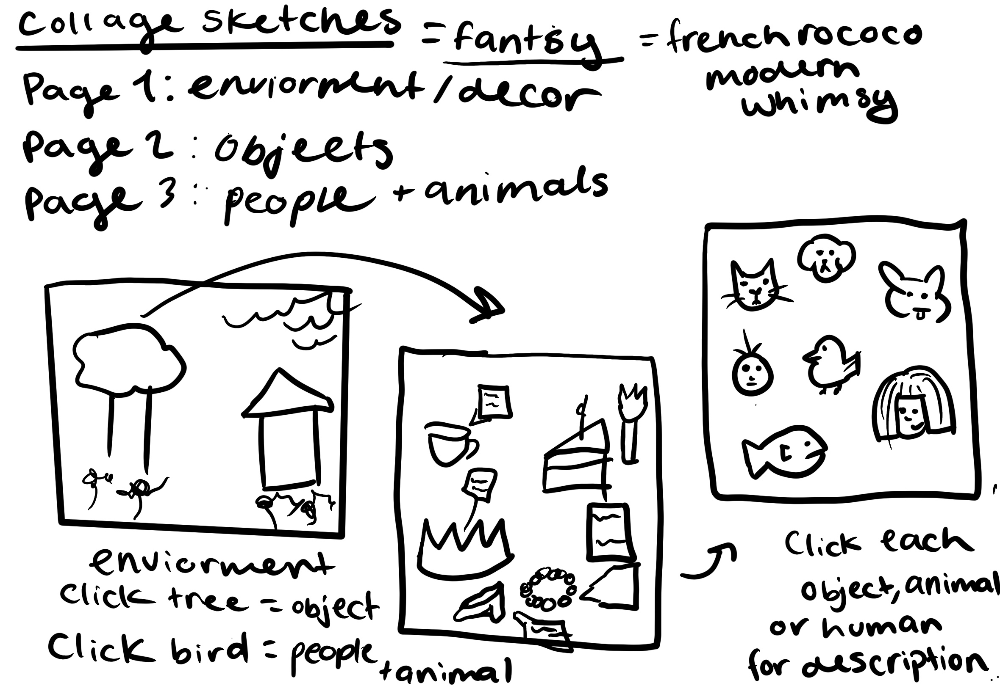

Project 1 Collage
This is the Project 1: Collage
My Ideation behing this project was to create a pop art collage, but while doing it I had come to the conclusion ovelaping images is very hard
especially with 'Grid Box' and for me grid bod is easier to understand haveing a organized grid format.
So I changed my format to use this project to better understand layering grids, and formating with both images and text.
So my theme changed to Tea, with a imformative mood board of tea.
With page 1 displaying the different types of teas, Page 2 Haveing corralating food parings for the teas
and lastly haveing ideas of places to drink tea.
page explanation
